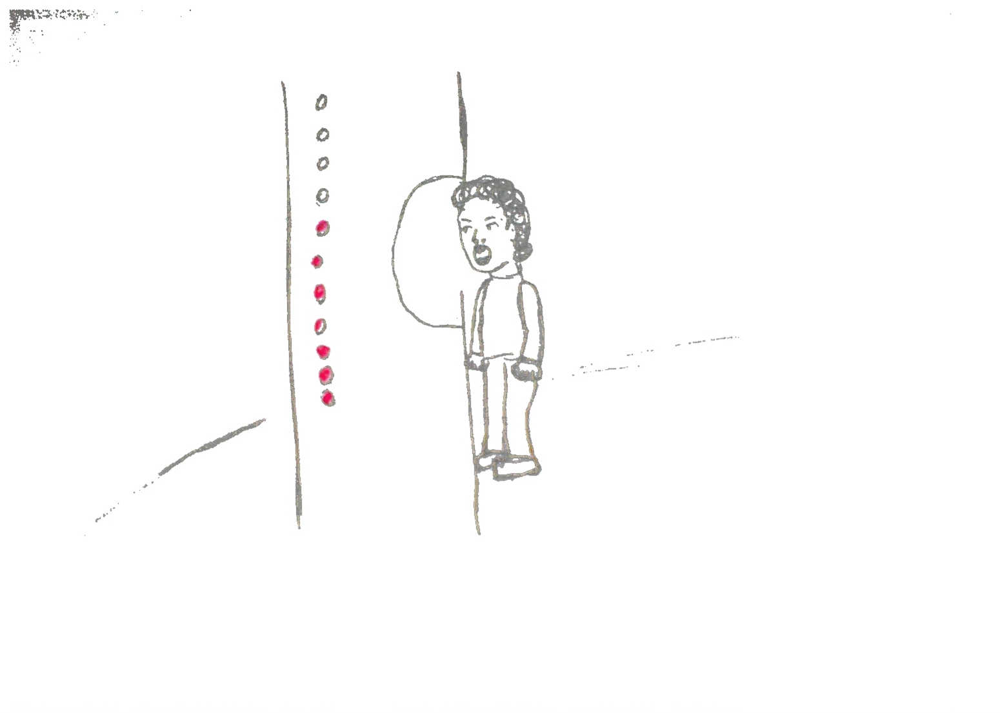
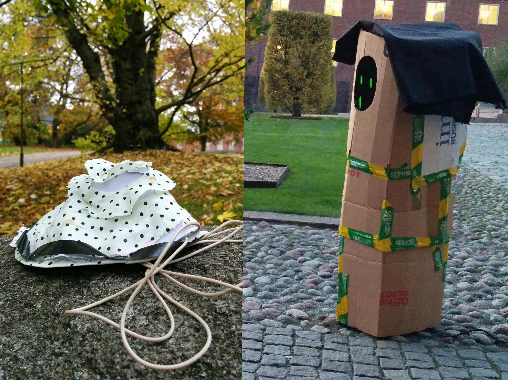

The theme for this project was responsible design and we choose to focus on children's mental wellbeing. This resulted in a concept for a playground divided in two parts, one active, out acting part and one for relaxation and reflection.
Our starting point was to design for children that do not feel well mentally. We began exploring this by sketching and ideation.
After discussions and feedback from peers, we decided to work further with two ideas; "the scream machine" and "the sea shell". We then made full size prototypes in cardboard, textile and paper. We also played around with modifying sound and light interaction.
With the sketches and prototypes we wanted to get more feedback, both from peers and from experts. We interviewed a psychologist who works with children aged 6-12 years old. With the feedback we decided to combine ideas and conceptualize our design. We also decided to have broader target group. Everyone can be stressed or feel blue sometimes. The playground concept was developed and we made a miniature model of it.